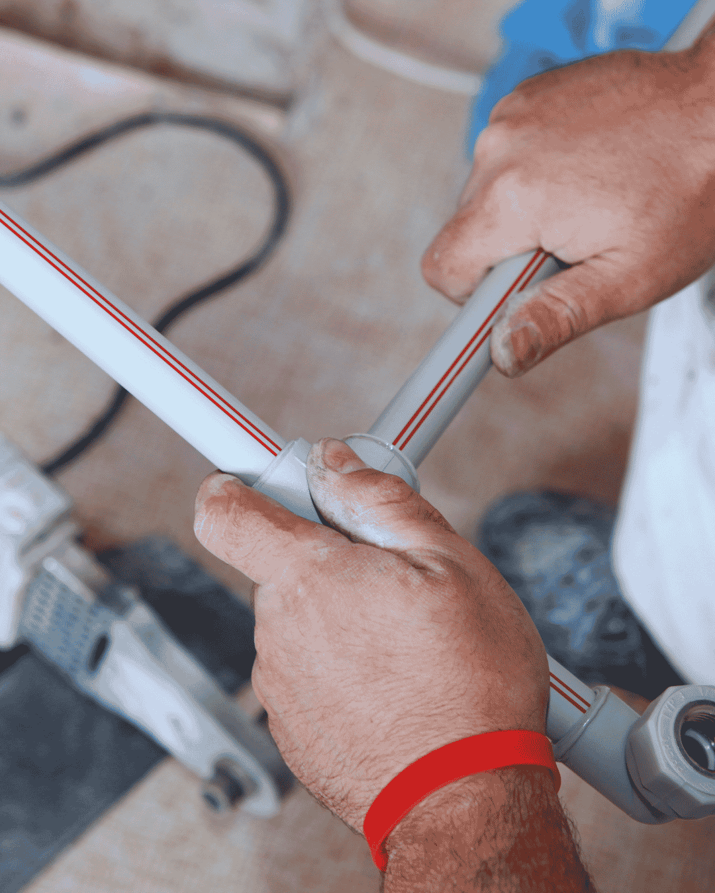

Leak detection in Boynton Beach starts with a simple test at the meter. If the dial moves while every fixture in the house is off, you have a leak. From there the job is finding it with the least damage possible. We run leak detection and repair from our home base in Boynton Beach and across the county, including Greenacres and Highland Beach.
We use listening equipment that picks up the sound of pressurized water escaping a pipe, thermal cameras that read temperature differences through tile and drywall, and tracer gas for lines that are hard to hear. Demolition is the last resort, not the first step.
A leak that hides for months is expensive twice. You pay the utility for water you never used, and you pay again for the drywall, cabinets and flooring it ruined on the way through.

Warning signs
Signs of a Hidden Water Leak in Your Boynton Beach Home
Hidden leaks almost always leave a trail. Here is what to look for before it reaches the drywall.
- A water bill that jumped with no change in habits
- The sound of running water when everything is off
- A warm spot on the floor, common with slab leaks
- Musty smell in a closet, cabinet or hallway
- Paint bubbling or drywall staining on a lower wall
- Mildew returning on the same patch of ceiling
- Water pressure that has slowly dropped
- A patch of lawn that stays green and soft in dry weather
Test it yourself: write down the meter reading, use no water for two hours, then read it again. Any movement means water is escaping somewhere.
What the visit includes
How Our Electronic Leak Detection Service Locates Hidden Leaks
Non-invasive first, always. We only open a wall or slab once we know exactly where the leak is.
Isolate the system
We shut off zones one at a time to narrow the leak to supply, drain, irrigation or the pool line.
Listen and scan
Acoustic amplifiers pick up escaping water. Thermal imaging finds hot water leaks behind tile and slab.
Pinpoint and mark
We mark the exact spot, often within a few inches, so any opening we make is small and repairable.
Repair and verify
Pipe repaired or rerouted, pressure tested, and the meter rechecked to confirm the leak is truly gone.
Water bill jumped with no leak in sight?Call for non-invasive leak detection and a written repair price before anything is opened.
Do this first
The Water Meter Test That Confirms a Hidden Leak
Before you pay anyone to find a leak, spend ten minutes proving there is one. This test is simple and it is the same starting point we use.
Step one: shut everything off
Turn off every fixture and appliance that uses water, including ice makers and irrigation controllers. Do not run a dishwasher or washing machine during the test.
Step two: read the meter
Open the meter box at the curb and note the exact reading, including the small dial. Many meters have a low-flow indicator, a small triangle or gear that spins with any movement at all. If that indicator turns while nothing is running, water is escaping somewhere.
Step three: wait and re-read
Use no water for two hours, then read the meter again. Any change means a leak. Photograph both readings so you have a record.
Step four: narrow it down
Close the main shutoff at the house and repeat the test. If the meter still moves, the leak is between the meter and the house, often an irrigation line or the service line. If it stops, the leak is inside the home or under the slab.
Bring those results to the call. It saves diagnostic time and it tells us which equipment to bring.

Boynton Beach conditions
Why Leaks Hide So Well in Boynton Beach Homes
Slab-on-grade construction is the reason. Almost every single-family home in Boynton Beach sits on a concrete slab with water lines running through or beneath it. There is no basement and often no crawl space, so a leak under the floor has nowhere to show itself until it saturates the soil and pushes moisture up through the slab.
Copper lines poured into slabs in the 1960s and 1970s are the usual suspects. Decades of hard water and mildly acidic soil pit the copper from both sides. A pinhole starts small and stays quiet.
Irrigation is the second common source, and it is easy to miss because the water disappears into sandy soil. Boynton Beach lawns drain fast. A cracked lateral can run for months without a puddle. We test the irrigation system separately from the house so the bill is traced to the right system.
Where leaks hide
Common Hidden Leak Locations in Slab-Built Florida Homes
Leaks are not random. In Boynton Beach construction they concentrate in a predictable set of places, which is what makes non-invasive detection practical.
Under the slab
Copper supply lines poured into concrete decades ago pit from both sides. Hot lines fail first because thermal movement wears them against concrete and rebar. Symptoms are a warm floor patch and the sound of running water with everything closed.
Behind shower and tub walls
Failed shower pans, cracked drain collars and dripping valve bodies soak the wall cavity and the framing behind it. The evidence often shows on the opposite side of the wall or in an adjacent closet rather than in the bathroom.
Irrigation and pool lines
Sandy soil drains fast, so a cracked irrigation lateral can run for months without a puddle. Pool plumbing does the same. Both need to be pressure tested separately from the house supply, which is why we isolate zones before pinpointing.
Water heater and laundry connections
Angle stops, braided supply lines and the heater's own fittings account for a large share of interior leaks. These are visible if you look, and they are the cheapest thing in the house to replace preventively.
Wall penetrations and hose bibs
Exterior spigots and the pipe behind them corrode in coastal air. A leak here soaks the wall and stucco slowly, often first noticed as a stain or paint bubbling at the base of an outside wall.
Pricing
Leak Detection and Water Leak Repair Cost in Boynton Beach
Detection is priced as its own flat-rate service, because finding the leak is a real job with real equipment. Once we know where it is, the repair is quoted separately and you decide whether to proceed.
If we cannot locate the leak, you are not charged for detection. That is rare, but it is our standard.
- Where the leak is. An accessible supply line or fixture, versus under a slab, behind tile or in a ceiling.
- How it is found. A visible leak needing no location work, versus acoustic and thermal equipment plus pressure isolation.
- Repair route. A spot repair at the located point, versus rerouting the line overhead to avoid repeat failures.
- Surface to open. A cabinet or drywall patch, versus tile, stone or finished flooring that has to be cut.
- What else is wet. A dry, contained leak, versus damage already in flooring or a neighbouring unit.
The number comes before the work. Call (833) 567-2788 for a range and get the flat price in writing at the property.
Before you call
The Meter Test You Can Run Yourself
Before anyone comes out, you can confirm whether you actually have a hidden leak. It takes two hours and costs nothing.
- Turn off every tap, appliance and ice maker in the house.
- Find the water meter and write down the full reading, including the small dial.
- Use no water at all for two hours; do not flush a toilet.
- Read it again. Any movement means water is escaping somewhere you cannot see.
One thing not to do: If you want to narrow it further, close the valve at the irrigation system and repeat. A leak that stops is in the irrigation, not the house.
Urgency
When Does a Hidden Leak Need an Urgent Visit?
A slowly rising bill can wait a few days. Call immediately if:
- A floor is warm in one spot, which usually means a hot line under the slab.
- Flooring is lifting, or baseboards and drywall are soft to the touch.
- You can hear running water with every fixture closed.
- There is a musty smell that returns after cleaning, which points to water inside the wall.
If any of those describe what you are seeing, call (833) 567-2788 now rather than booking online. Emergency calls are moved to the front of the queue.
FAQs
Leak Detection FAQs
How accurate is electronic leak detection?
On pressurized lines we usually pinpoint within a foot, often closer. That is the difference between a small patch and an open floor.
Will you have to break my floor?
Only if the leak is under the slab and rerouting is not practical. When we do cut, the opening is small and we patch it.
Can you find a leak in my pool line?
Yes. Pool plumbing and irrigation both get pressure tested separately from the house supply.
How long does the visit take?
Most residential detection visits take one to three hours, depending on the size of the home and how many systems must be isolated.
Does insurance pay for slab leak repair?
Many Florida policies cover the cost to access the leak and repair resulting damage, but not the pipe itself. We document everything for the claim.
Can you find a leak without breaking the floor?
That is the whole point of the equipment. Pressure isolation narrows it to a zone, then acoustic listening and thermal imaging usually place it within inches before anything is opened. Cutting is the last step and it is kept to the smallest opening that lets us make the repair.
Related plumbing services
Repairs That Follow a Leak Detection Visit
Where this service usually leads, and what it often follows.
Slab Leak Repair
When the leak turns out to be under the concrete, locating it is step one and the repair route is the decision that follows.
Pipe Repair and Installation
A third hidden leak in two years is not a run of bad luck. At that point the system is telling you it is finished.
Emergency Plumber
If the leak is actively flooding rather than quietly running, shut the main off and treat it as an emergency call.
View all 16 plumbing services →
Leak Detection Near You in Palm Beach County
- Leak Detection in Delray Beach
- Leak Detection in Lake Worth Beach
- Leak Detection in Lantana
- Leak Detection in Boca Raton
- Leak Detection in Wellington
- Leak Detection in Greenacres
- Leak Detection in Hypoluxo
- Leak Detection in Ocean Ridge
- Leak Detection in Manalapan
- Leak Detection in Palm Springs
- Leak Detection in West Palm Beach
- Leak Detection in Highland Beach
Water bill spiked with no leak in sight?
We find hidden leaks in Boynton Beach homes with acoustic and thermal equipment, then repair them properly.